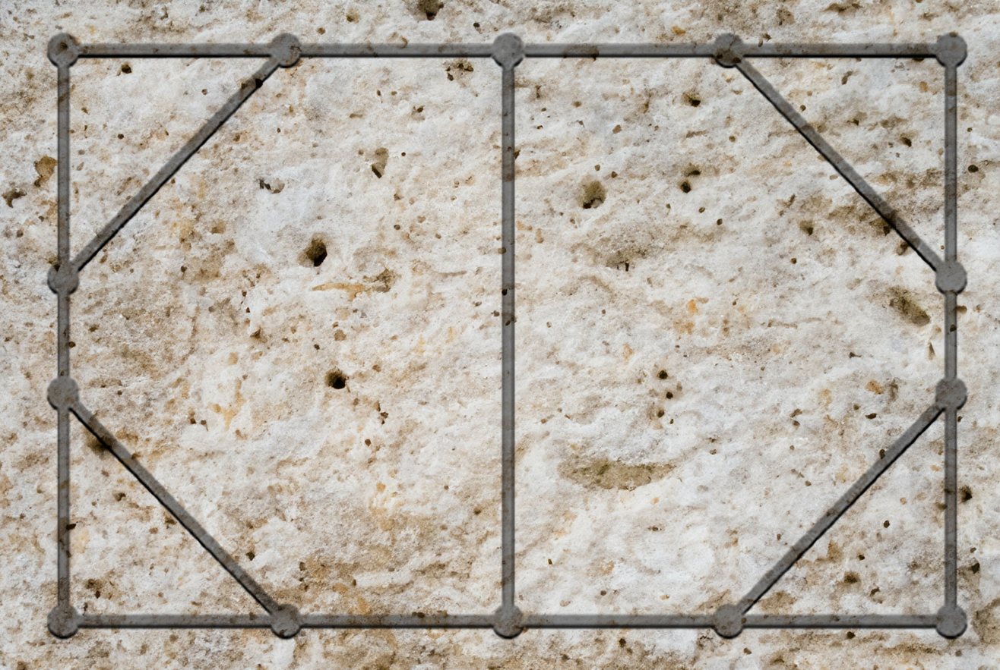

Venatio
Speel als jager of prooi op een Romeins jachtbord.
Twee spelers nemen het tegen elkaar op: de jager met 4 stenen en de prooi met 2 stenen. De jager begint. Spelers verplaatsen om de beurt één steen over een lijn naar een aangrenzend kruispunt. Je mag niet over andere stenen springen en stenen mogen niet op dezelfde plek staan. Een prooisteen is ingesloten als die geen enkele zet meer kan doen. Het spel eindigt zodra beide prooistenen zijn ingesloten. Tel het aantal zetten van de jager en probeer er zo weinig mogelijk te hebben gedaan bij het vangen van de prooistenen, een goede jager doet het in 18 zetten of minder.
